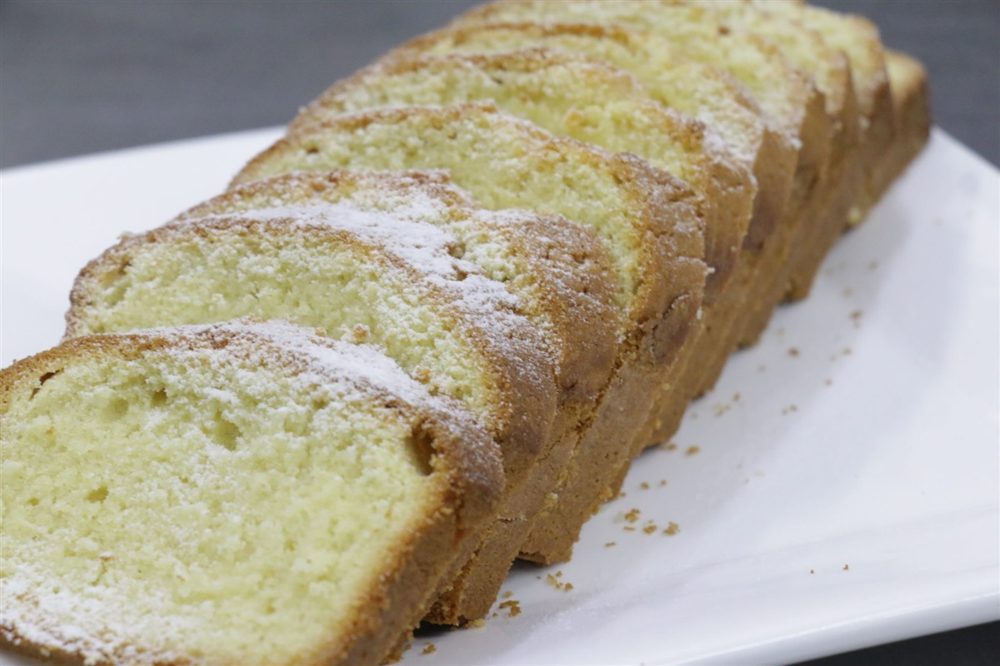

掲載の写真はフリー素材のイメージです。WaiWaicafeの店内・商品の実際の写真ではありません。他地域で撮影されたものや、撮影地が不明なものを含みます。
お店について
詳細は準備中です(お問い合わせください)。確認できている基本情報だけを掲載しています。
| 屋号 | WaiWaicafe |
|---|---|
| 所在地 | 青森県八戸市旭ケ丘3丁目1-5 |
| 電話 | 0178-32-6803 |
| @waiwai_cafe_ | |
| 営業時間 | 準備中(お問い合わせください) |
| 定休日 | 準備中(お問い合わせください) |
| 料金 | 準備中(お問い合わせください) |
| スタッフ | 準備中(お問い合わせください) |
これは制作側の案です
制作側のご提案
このページを作るにあたり、制作側で「ひと息の置き場所」というイメージを考えました。立ち寄る前の「どんなお店だろう」という気持ちを、写真とやわらかな余白で受け止めるページを目指しています。
これはお店の理念や由来ではなく、制作側が考えた案です。実際のお店の考え方とは異なる場合があります。

お店についてくわしく知りたい方は、お電話またはInstagramでお問い合わせください。